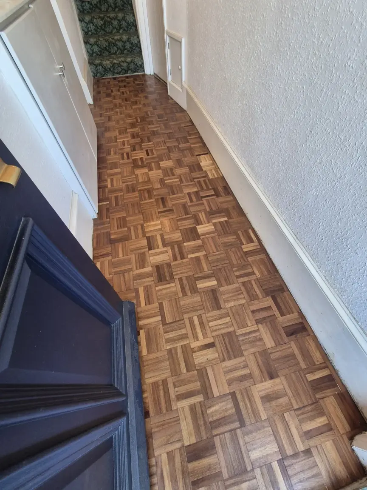
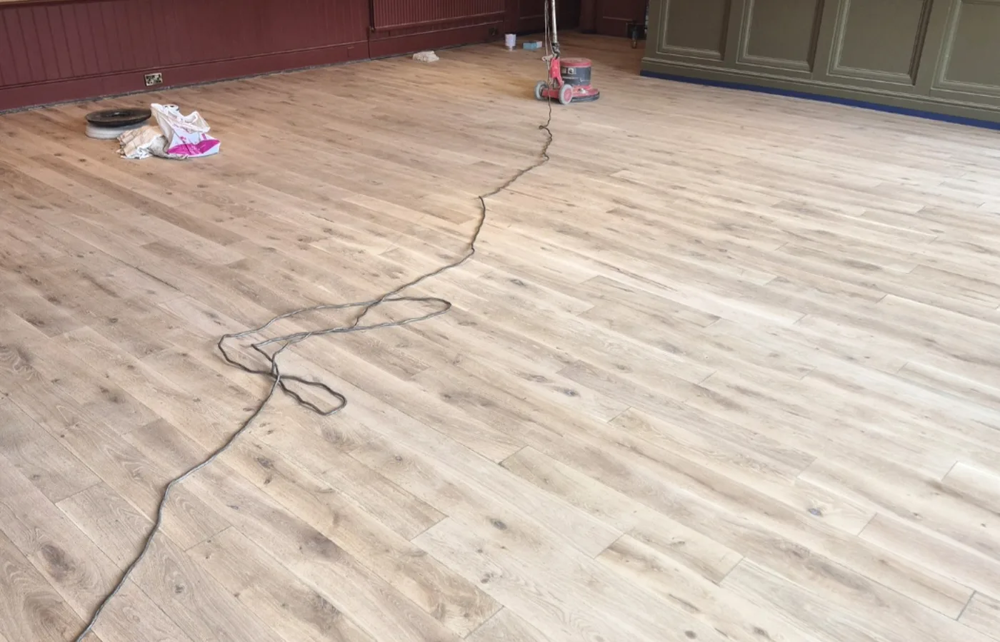
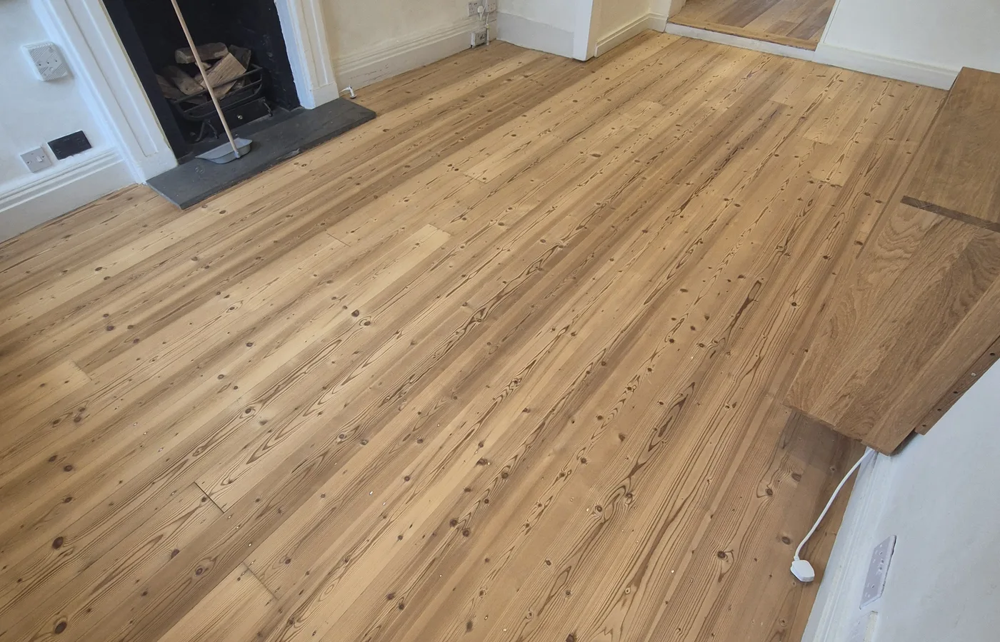
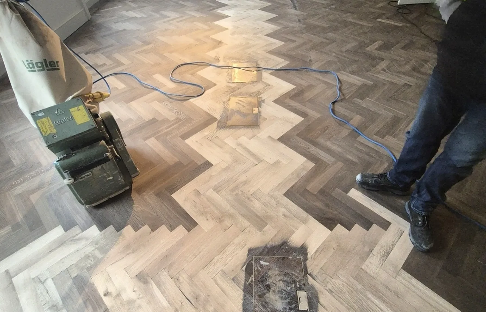
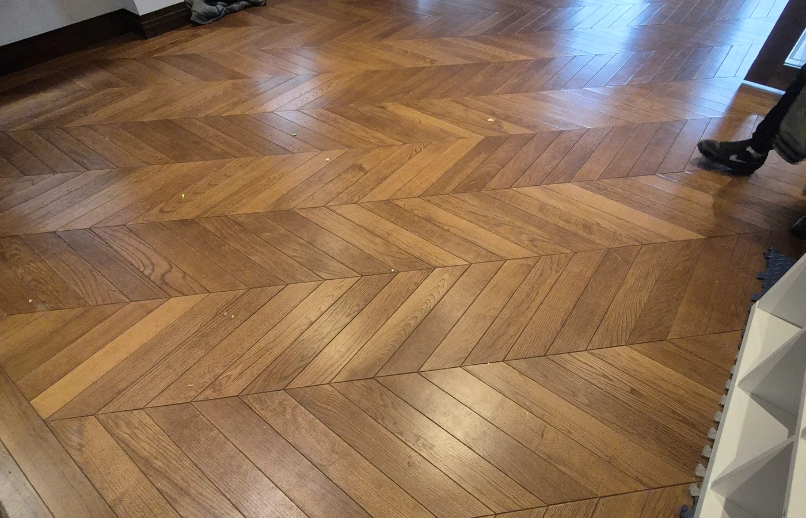
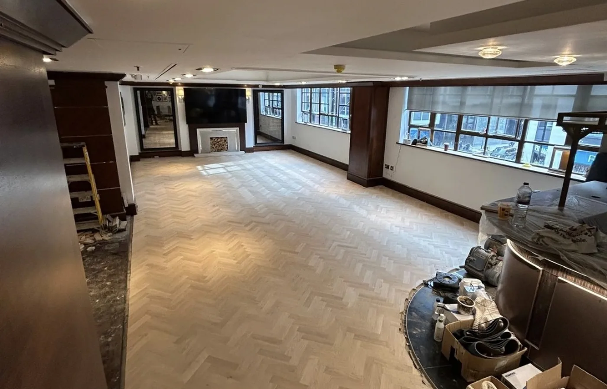
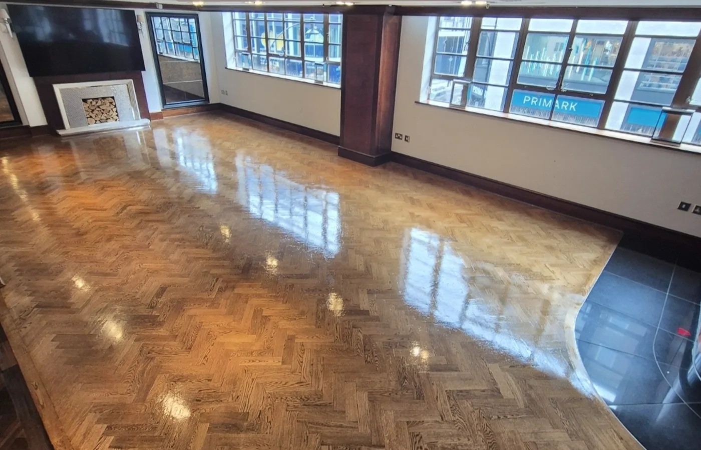

Basketweave Parquet Restoration in Eastbourne
An existing basketweave parquet hallway in Eastbourne was repaired, sanded and refinished to restore its pattern and natural timber colour.
View projectBrowse completed sanding, restoration, parquet, herringbone and installation projects. Floor sanding and refinishing remain our primary specialist service.

An existing basketweave parquet hallway in Eastbourne was repaired, sanded and refinished to restore its pattern and natural timber colour.
View project
A heavily worn timber floor was progressively sanded, edge-sanded and refinished to create a cleaner, brighter and more usable surface.
View project
Original pine boards were sanded through the correct abrasive sequence and finished to retain a clean, natural timber appearance.
View project
A tired parquet floor was prepared, sanded and refinished to sharpen the pattern and improve the overall appearance.
View project
Herringbone blocks were carefully prepared and restored, bringing the pattern and natural variation back into focus.
View project
The base was prepared and parquet flooring installed with careful setting out, clean alignment and detailed perimeter work.
View project
An existing parquet floor was stripped back, prepared and refinished to improve colour consistency and protection.
View project